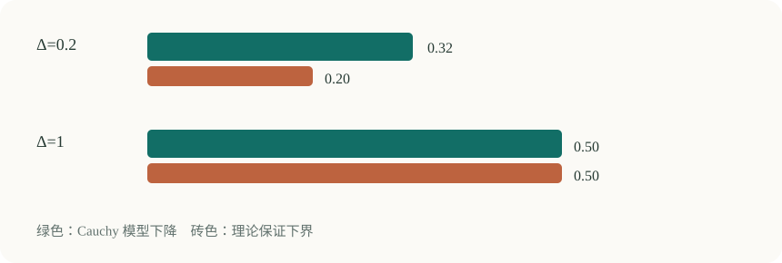

4.2.1 Cauchy 下降界：信赖域全局收敛证明的起点
信赖域子问题不必被精确求解，但不能每轮都只产生可以忽略的模型下降。Cauchy 点保证模型下降至少与梯度、半径和曲率范数构成的下界成正比。
为什么一个下降下界能成为全局证明的关键
模型 mₖ(p)=fₖ+gₖᵀp+½pᵀBₖp，约束 ‖p‖≤Δₖ。即使不精确求子问题，也要防止梯度明显非零时产生接近零的下降，否则无法排除算法长期原地踏步。
Cauchy 点满足一个统一估计：m(0)−m(pᶜ)≥½‖g‖min{Δ,‖g‖/‖B‖}。这里的 ‖B‖ 是诱导二范数；当 B=0 时，第二项应按无穷大理解，程序不得直接除零。
沿负梯度的两种曲率情形
取 p=−tg，模型下降是 t‖g‖²−½t²gᵀBg。若 gᵀBg≤0，则沿 t 增大模型一直下降，Cauchy 取 t=Δ/‖g‖，至少取得 Δ‖g‖ 的下降。
若 gᵀBg＞0，则用 t=min{‖g‖²/(gᵀBg),Δ/‖g‖}。再利用 gᵀBg≤‖B‖‖g‖²，便可以推出只用 ‖g‖、Δ 和 ‖B‖ 表达的统一下界，常数是 ½。

两组半径的精确数字
令 g=(2,0)、B=diag(4,1)，则 ‖g‖=2、‖B‖=4、‖g‖/‖B‖=0.5。Δ=0.2 时 Cauchy 点 p=(−0.2,0)，实际模型下降是 0.32，统一下界为 0.2。
Δ=1 时，Cauchy 点 p=(−0.5,0)，模型下降 0.5；下界也为 0.5。这里恰好取等，不意味着任意问题、任意半径都能取等。
由下界走向全局收敛仍需哪些条件
若某近似子问题求解方法保证达到固定比例的 Cauchy 下降，则同阶模型下降下界也保留。但要把模型下降变成真实 f 的渐近结论，仍需考虑实际/预测下降比、半径缩小规则、模型与真实目标一致性及目标有下界等假设。
因此这条引理不是完整全局收敛定理，更不能单独说明迭代点一定收敛到一个局部极小点。
当梯度为零或模型不定时
若 g=0，这条下降下界右侧为零，不能辨认负曲率方向，也不能判断当前位置是不是非极小驻点。处理二阶驻点需要更多 Hessian 或子问题信息。
本页代码只验证对角二次模型上的一阶 Cauchy 下界，不实现完整信赖域主算法，也不会调用真实目标进行接受检查。
交互：改变参数并观察模型下降
调整半径，确认实际模型下降从不低于统一下界；请不要把模型下降误读为真实目标下降。
实时模型计算
Python：模型与断言交叉验证
完整代码仅依赖 Python 标准库；可独立运行，包含数值断言。
"""Numerically check the Cauchy decrease lower bound."""
def example(radius):
if radius <= 0:
raise ValueError("radius must be positive")
norm_g, norm_B = 2.0, 4.0
t = min(0.25, radius/norm_g)
x = -2.0*t
reduction = -2*x - 2*x*x
lower_bound = 0.5*norm_g*min(radius,norm_g/norm_B)
return x,reduction,lower_bound
if __name__ == "__main__":
for r in (0.1,0.2,0.5,0.8,1.0,1.5):
x,actual,bound=example(r)
print(r,x,actual,bound)
assert abs(x)<=r+1e-12
assert actual>=bound-1e-12
_,actual,bound=example(0.2)
assert abs(actual-0.32)<1e-12 and abs(bound-0.2)<1e-12
_,actual,bound=example(1.0)
assert abs(actual-0.5)<1e-12 and abs(bound-0.5)<1e-12